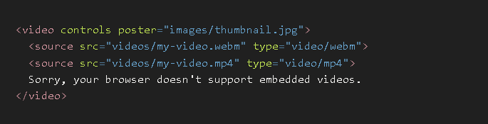
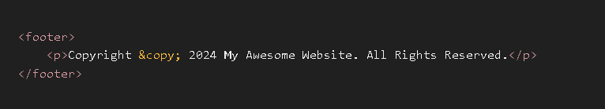
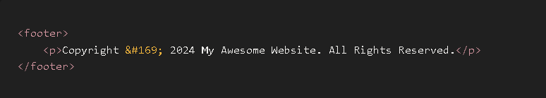
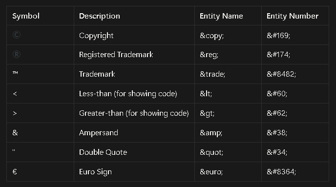

HTML offers several tags specifically designed for embedding and controlling multimedia content on web pages. These are often referred to as "media tags" or "media elements."
<audio>: It is a useful tag if you want to add audio such as songs, or any sound files into your webpage.
<video>: It is a standard way to embed a video into your web page.
The fundamental truth is that a webpage should be able to deliver any kind of content, not just static text and pictures. For years, this was a major problem. To play a video or audio file, browsers had to rely on third-party
plugins like Adobe Flash, QuickTime, or Silverlight. This was inefficient, insecure, and inconsistent across different computers.
The Core Problem
How can we embed video and audio into a webpage in a standardized, native, and plugin-free way? We need a universal system that works on every modern browser, from a desktop PC to a mobile phone, without requiring
the user to install anything extra.
The Logical Solution: The HTML5 <video> and <audio> Tags
The solution was to create dedicated HTML tags whose sole purpose is to embed and control media.
The star of the show is the <video> tag. At its simplest, it just needs to know the source of the video file.
Code:
Output:
The Problem We Immediately Face: If you put this on a page, you'll just see the first frame of the video as a static image. You can't play it, pause it, or change the volume. It's not a video player; it's just a video frame.
The Solution: We need to add player controls. The browser has a beautiful set of default controls built-in, and we can turn them on with a simple attribute.
The controls attribute is a boolean attribute. You don't need to set it to a value (controls="true" is unnecessary); its mere presence turns the feature on.
Code:
Output:
Result: You now have a fully functional video player on your page, complete with a play/pause button, a timeline scrubber, volume controls, and a fullscreen option. This is the simplest, most effective way to embed a video.
Now that we have a player, how do we control its behavior and appearance? We use attributes.
width and height: Just like with an <img> tag, you can set the dimensions of the player.
Code:
<video src="./video.mp4" width="500" height="400" controls></video>
Output:
autoplay: This attribute will make the video start playing as soon as the page loads.
CRITICAL CAVEAT: Modern browsers (Chrome, Safari, Firefox) will block autoplay with sound because it's a terrible user experience. To make autoplay work, you almost always have to add the muted attribute as well.
Code:
Output:
loop: Makes the video automatically restart from the beginning when it finishes. Great for background videos.
poster: This is a fantastic feature for user experience. It specifies an image to display before the video is played, just like a YouTube thumbnail.
Code:
Output:
The good news is that the <audio> tag works almost identically to the <video> tag, just without the visual component.
The Problem: How do we embed a sound file (like a song or a podcast) with player controls?
The Solution: Use the <audio> tag with the controls attribute.
Code:
Listen to our theme song:
Output:
Result: A clean audio player with play/pause, a timeline, and volume controls. It uses the same attributes like autoplay, loop, and muted.
This is where we move from just making a player work to making it work for everyone, on every browser.
Problem #1: Not all browsers support the same video formats.
Chrome might prefer the modern .webm format, while Safari on an iPhone might only support .mp4. If you only provide one src, some of your users won't be able to see your video.
The Solution: The <source> Element
Instead of putting the src on the <video> tag itself, you can provide multiple formats inside the tag using the <source> element. The browser will go down the list and play the first one it supports.
Code:

This is the robust, professional way to embed media. The type attribute tells the browser what kind of file it is so it doesn't have to waste time downloading a file it can't play.
You can use either the entity name or the entity number. Both produce the exact same result. The entity name is generally easier to remember.
This is the most common and readable method.
Code: & copy;
Example Usage in a Footer:

Output:
Copyright © 2024 My Awesome Website. All Rights Reserved.
This method uses the character's numerical code. It works just as well but is less descriptive.
Code: & #169;
Example Usage:

Output:
Copyright © 2024 My Awesome Website. All Rights Reserved.
